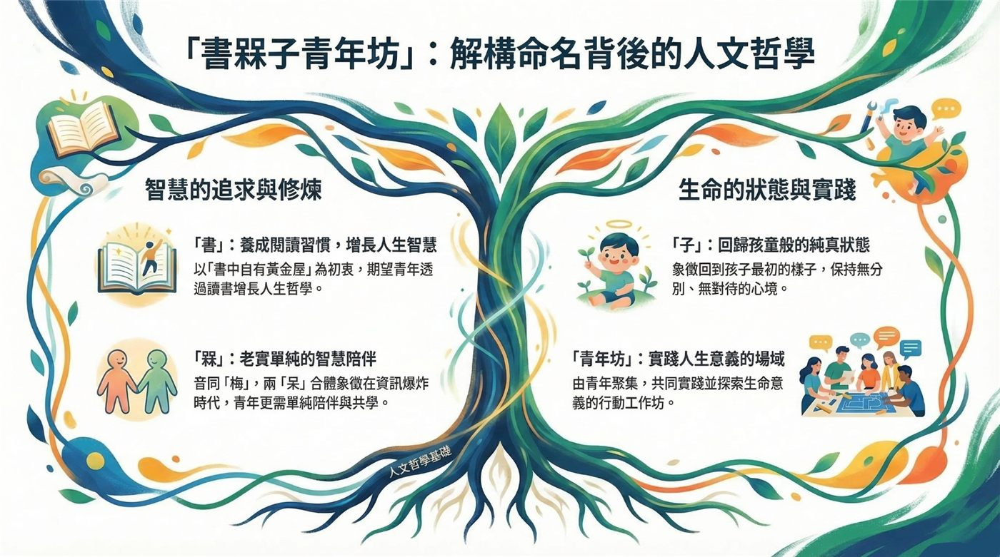

關於我們
成長不是靠硬撐，而是有人同行。
從一個小聚會開始
書槑子青年坊起源於 2024 年 8 月 9 日，最初只是 10 人以內的小小青年定期聚會。
這一年來，我們一起走過忙碌、迷惘與壓力，也在一次次的相聚中，讓每位青年都能在這裡找到更舒適、安定的心理狀態——被理解、被接住、也被鼓勵往前。
隨著越來越多夥伴加入，我們從小聚會成長為 30 多人的大家庭。在一週年時，我們共同決議正式成立「書槑子青年坊」，並期待有更多願意同行的家人，一起加入這段回家的路。
我們相信
成長不是靠硬撐，而是有人同行；不只靠熱血，而是有方法、有練習，還有支持你的社群。
在這裡，你可以帶著迷惘來、帶著壓力來、帶著想變好的心來。我們會陪你慢慢整理自己，找到節奏，並在生活裡一步一步變得更穩、更有力量。

名字的由來
- 「書」：養成閱讀習慣，增長人生智慧
以「書中自有黃金屋」為初衷，期望青年透過讀書增長人生哲學。 - 「槑」：老實單純的智慧陪伴
音同「梅」，兩個「呆」合在一起，象徵在資訊爆炸的時代，青年更需要單純的陪伴與共學。 - 「子」：回歸孩童般的純真狀態
象徵回到孩子最初的樣子，保持無分別、無對待的心境。 - 「青年坊」：實踐人生意義的場域
由青年聚集，共同實踐並探索生命意義的行動工作坊。

想認識我們？先來一次靈魂健身房或韜課館吧！
📅 看近期活動